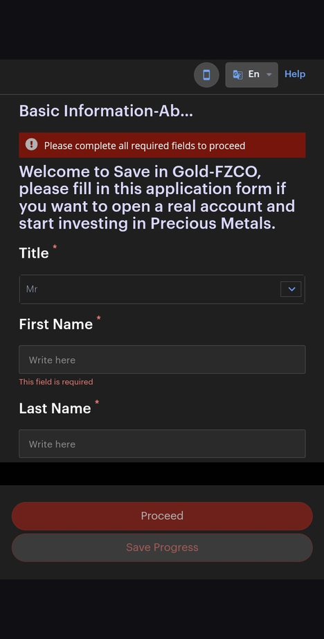
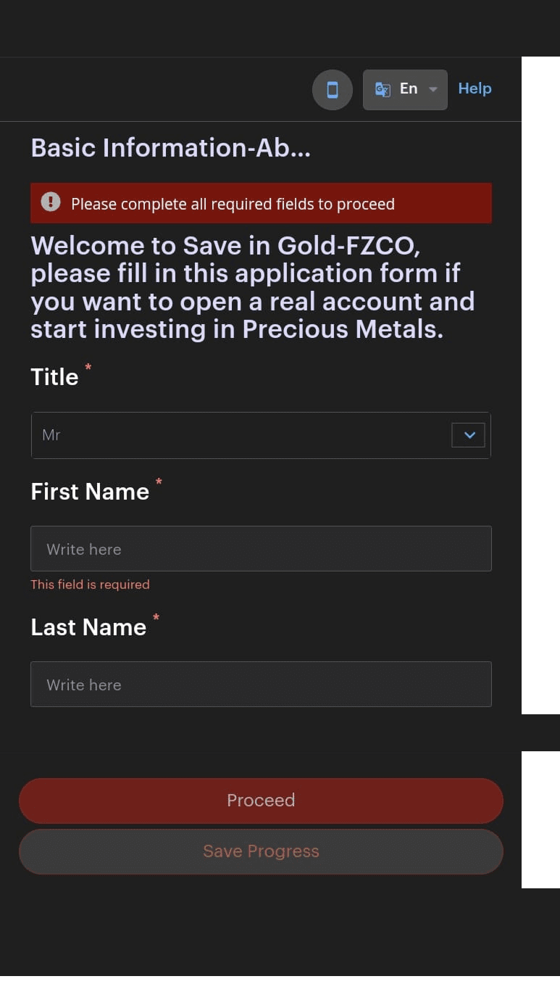
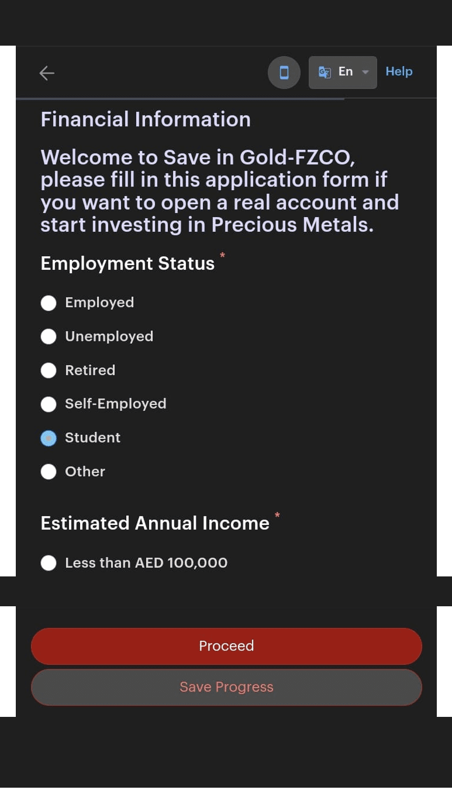
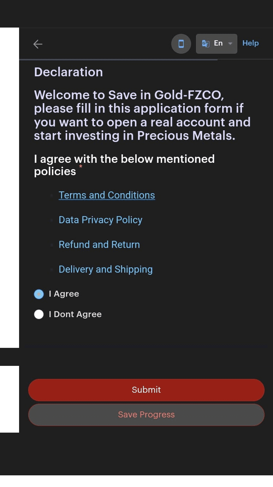
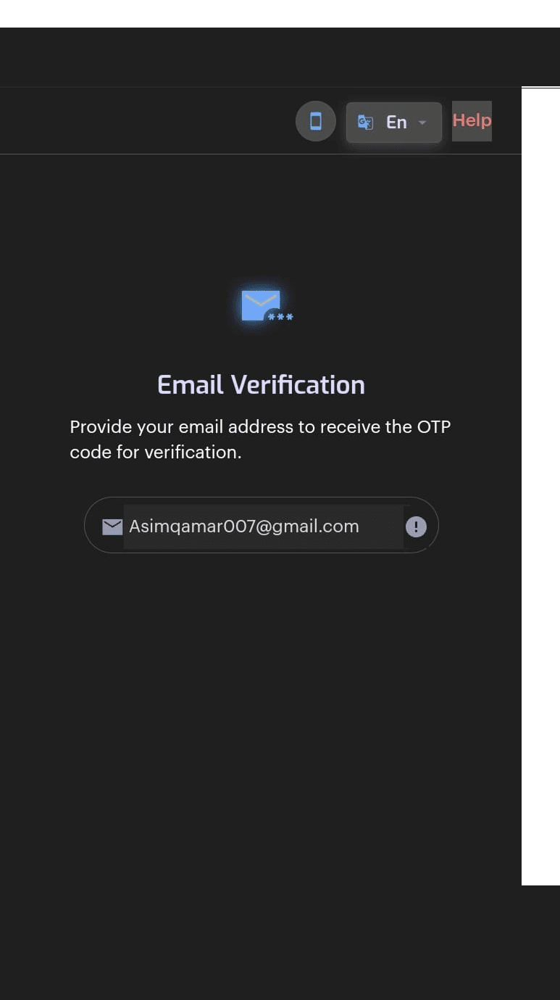
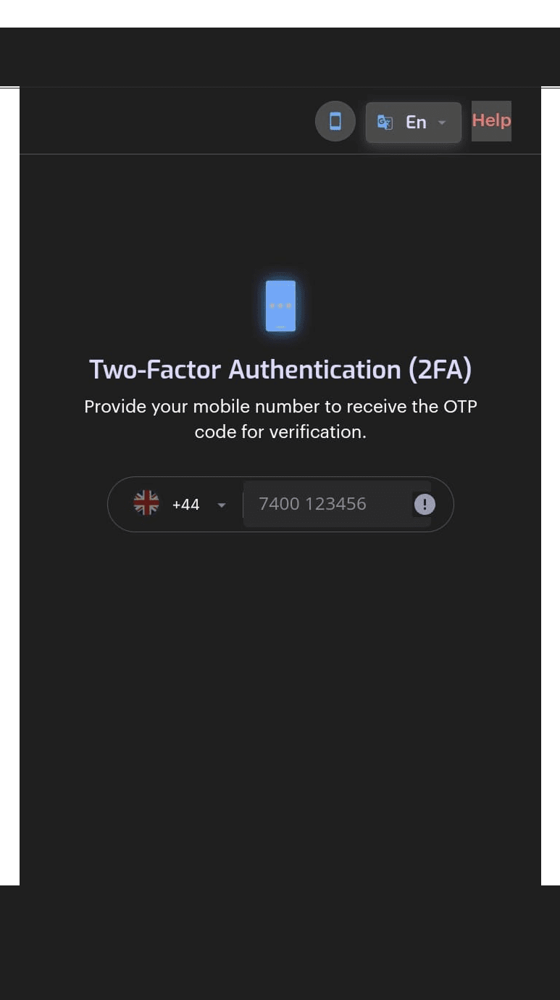
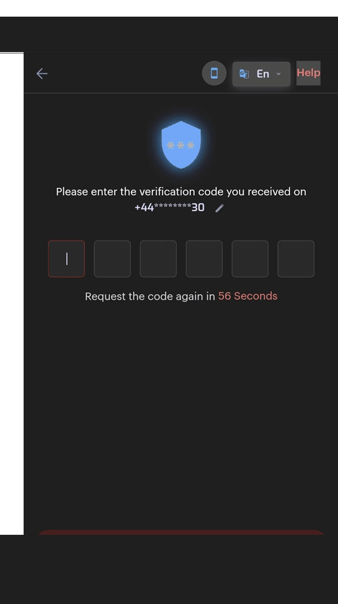
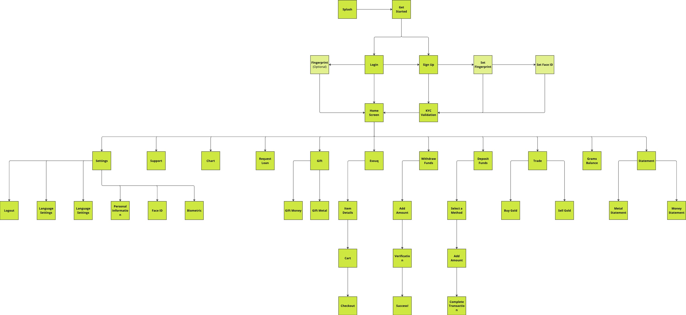
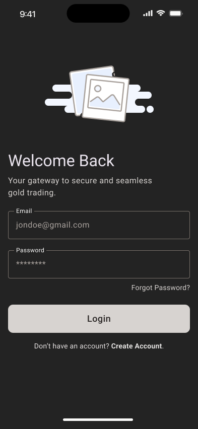
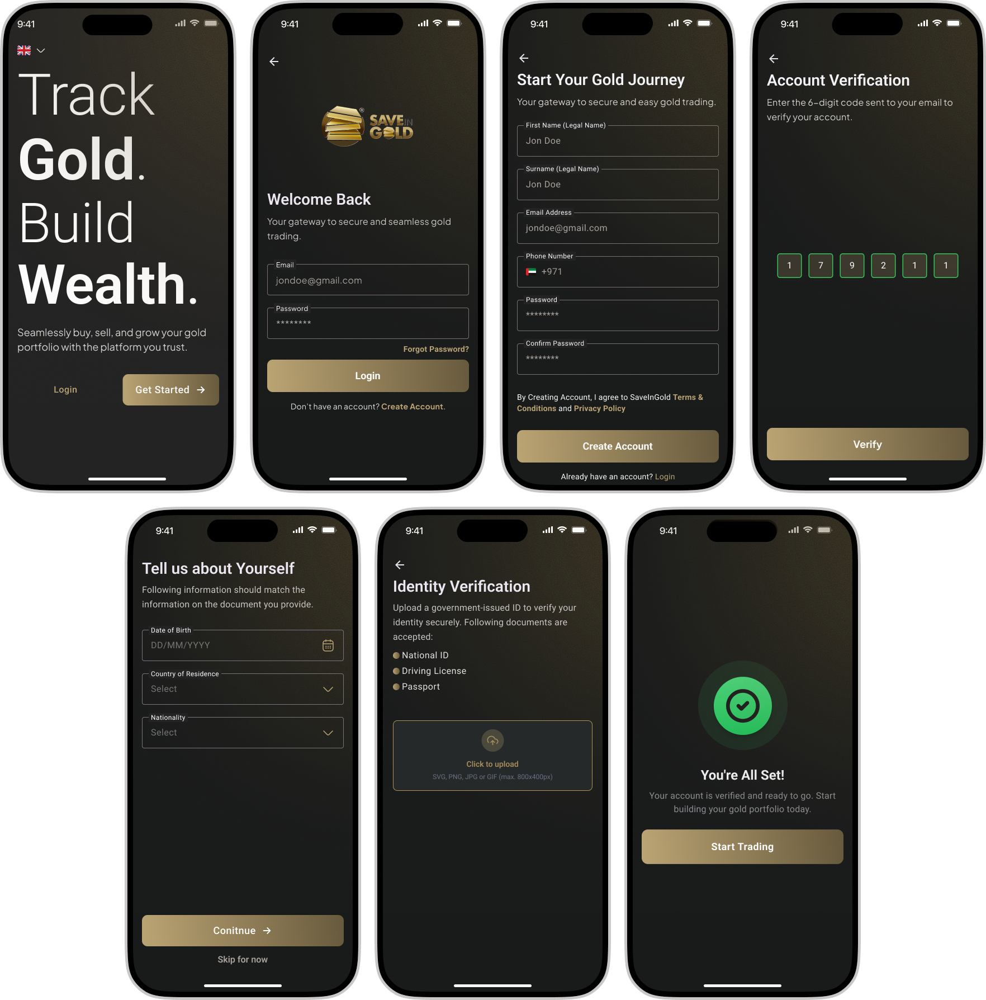

SaveInGold is a UAE-based fintech platform for digital gold investment. The existing app was redirecting users to an external browser for registration, causing a 42% drop-off. I redesigned the entire experience from registration to trading.
The Problem
SaveInGold's registration relied on a third-party KYC provider that opened in an external browser. Users tapped "Register" inside the app and were suddenly redirected to a web form on an external domain, completely outside the native experience.
The result: confusion, broken trust, and a 42% registration drop-off rate. Users didn't know if they were still in the app or on a phishing page.
Research
Through user interviews and analytics review, three recurring pain points surfaced:
"I wasn't sure if I was still in the app or taken somewhere else."
— User interview, registration flow
"There's too much going on. I just want to see my gold balance."
— User interview, dashboard feedback
"It didn't feel secure enough to connect my bank account."
— User interview, trust perception
Users abandoned registration at the point of redirection to the external browser.
Related to issues with account setup, registration, and card linking.
Users spent less than 30 seconds in the app, not engaging with core features.
The existing UI lacked visual hierarchy, making it hard to find key actions like balance and trading.
Design Goals
Move the entire KYC and onboarding flow inside the app. No more external browser redirects.
Strip away visual clutter. Make gold balance, trading, and account actions immediately scannable.
Design a premium interface that matches the seriousness of handling real money and gold assets.
Redesign the buy/sell gold experience with clear pricing, quantity inputs, and confirmation flows.
Before & After
The biggest win. Users no longer leave the app to register. The old flow opened a third-party form in an external browser. The redesign keeps everything native, branded, and secure.

 Before
After
Before
After
Registration redirected to an external browser for KYC verification. Users lost context, trust, and most abandoned the process entirely.
Fully native registration with branded UI, clear form labels, and biometric security setup, all without leaving the app.
The Old Experience
Six external browser screens — basic info, financial info, declarations, email verification, 2FA, and OTP entry. All on a third-party domain. All outside the app.






User Flow
I mapped the complete user journey from first launch through registration, KYC verification, and into the core trading experience, eliminating every external redirect along the way.

Wireframes
Before jumping into high-fidelity screens, I mapped out the core flows as wireframes: login, home dashboard, trading, and transfers. This helped validate layout decisions, information hierarchy, and interaction patterns early, without getting distracted by visual details.



Registration Screens
The original registration pushed users to a third-party browser for identity verification, breaking context, losing brand trust, and causing a 40% drop-off before completion. I needed to bring the entire flow in-house without compromising on regulatory compliance.
The redesigned flow keeps every step native: account creation, email verification, document upload, and KYC approval. Progressive disclosure breaks a complex process into manageable steps, reducing cognitive load while maintaining full compliance. The result: a registration experience that feels as simple as signing up for any consumer app, even though it meets financial-grade verification standards.

Trading Module
The trading interface was redesigned to give users clear pricing, real-time rates, and intuitive controls. The full flow, from market overview to order confirmation, guides users through each step with zero ambiguity about what they're buying, at what price, and what it costs.

Live gold and silver prices at a glance. One tap to start trading. No clutter, just the information that matters.

Selling and buying prices displayed side by side. Enter amount in grams or AED, toggle limit pricing, and confirm, all on one screen.

A clear review modal before execution. Order type, amount, target price, and estimated total. Nothing hidden, nothing ambiguous.

Full order summary with ID, timestamp, trade type, and total. Users know exactly what happened and what to expect next.
Constraints
The KYC provider's API had rigid field requirements that couldn't be changed on our side. My first attempt at a streamlined registration form had to be scrapped because the provider required fields in a specific order with exact validation rules. I had to work backward from their technical constraints to design a flow that felt simple while still satisfying every compliance requirement under the hood.
Design Decisions
Decision 1: Kill the redirect
The single highest-impact change. By moving registration in-app, I eliminated the trust gap that caused 42% of users to abandon. No external browser, no unfamiliar domain, no confusion.
Decision 2: Dark UI with gold accents
A dark interface with warm gold tones reinforces the premium nature of gold trading. It also reduces visual noise in data-dense screens like the trading module and portfolio view.
Decision 3: Biometric-first security
Face ID and fingerprint login were designed as the primary authentication path, not an afterthought. Users handling real money need to feel secure without friction.
Results
After launching the redesigned app, SaveInGold saw a 42% reduction in registration drop-off, measured by comparing completion rates in the old external-browser flow against the new native flow over the first 30 days post-launch. Support tickets related to account setup declined significantly.
In usability testing, all 8 participants (mix of existing users and new signups) completed registration without assistance or hesitation. No one asked where they were, no one dropped off, and no one needed to restart. Users could now register, verify their identity, and start trading gold without ever leaving the app.
"Asim transformed our app from a confusing, fragmented experience into something our users actually trust with their money."Amro Jabar · COO, SaveInGold